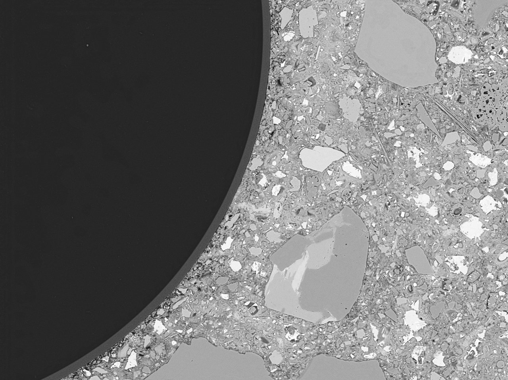
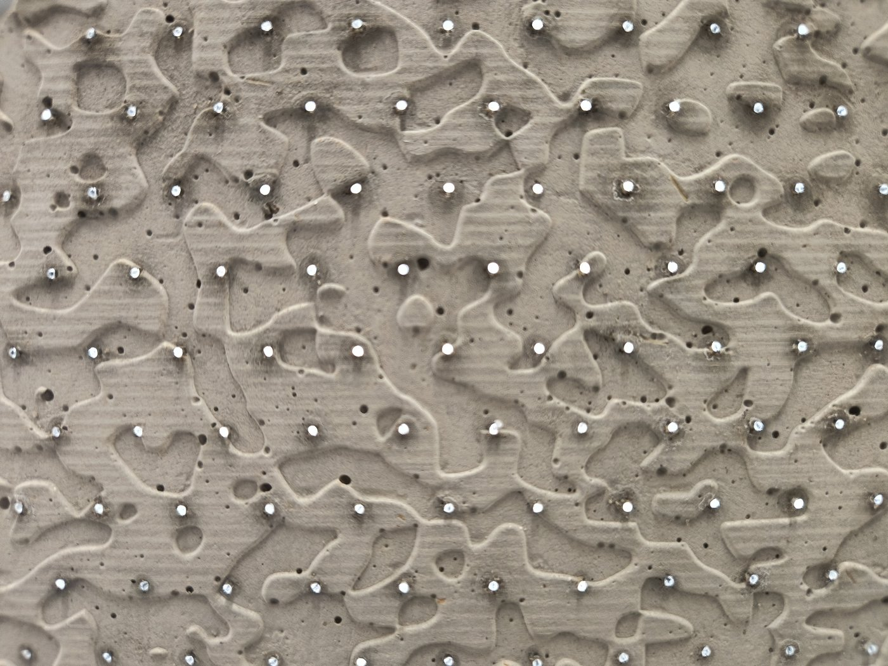
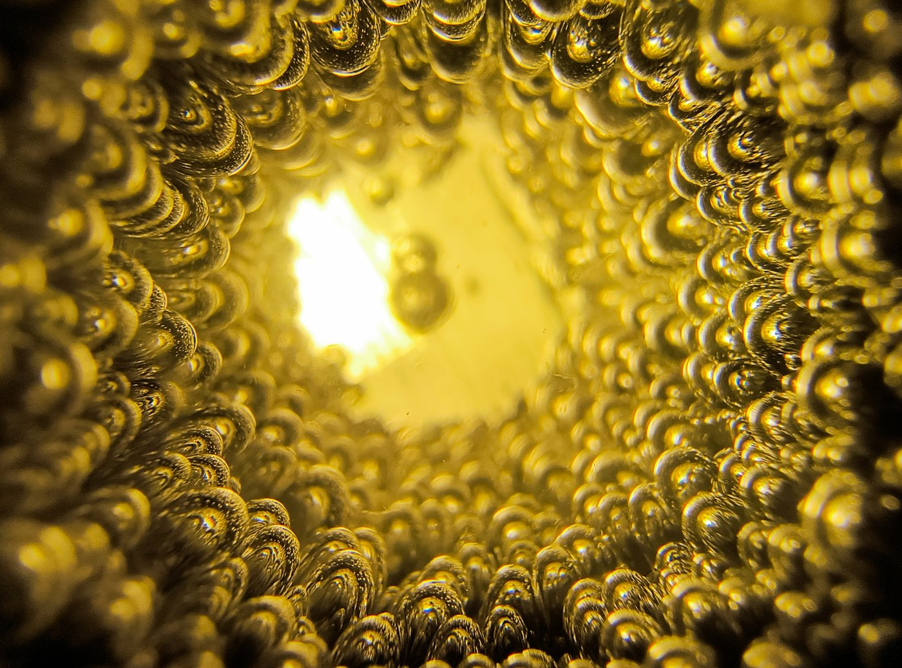

2026
Acfas - La preuve par l'image

Art-science & creative dissemination
Light-transmitting concrete is as much a visual phenomenon as a structural one. I work in scientific photography and visual communication to translate experimental materials into images, exhibitions, and immersive installations for both specialist and general audiences.



Light-transmitting cementitious composites presented as immersive installations within an exhibition exploring how quantum science can be translated into sensory experience.
Science communication Communicating research beyond the laboratory Visual communication has been part of my research throughout my doctoral work. I develop scientific figures, photographs, presentations, and exhibition materials to communicate experimental methods and results across different audiences. This work brings together scientific communication, photography, graphic design, and material experimentation, complementing my academic publications and conference presentations.